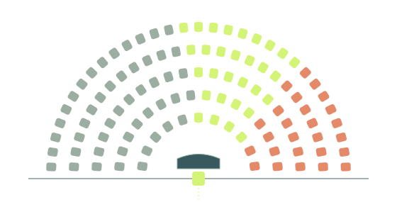

DECISION GAME8–10 MIN
MISSION 01
Get your bill passed.
You have an idea for student transit. Can you get it through Congress without losing what matters?
CIVICS LAB / GRANITE HILLS HIGH SCHOOL
Your phone. Your school. Your future.
Government is already part of your life.
Now it’s your turn to make the decisions.
Real concepts. Tough choices. Room to change your mind.

01 / LEARN BY DOING
Pick a mission. Try a strategy. See what happens.
Every activity ends with something to think about.
MISSION 01
You have an idea for student transit. Can you get it through Congress without losing what matters?
MISSION 02
Fund the things you care about. Then explain what you gave up—and who feels the difference.
MISSION 03
Keep every voter. Change the groups. Discover how a 40% vote share can turn into zero seats.
MISSION 04
A viral claim sounds convincing. Follow the evidence before you share it.
MISSION 05
Make a claim, consider the strongest objection, and build a response that holds up.
MISSION 06
Try eight questions. Get the reasoning. Revisit the ones that need another look.
Precinct-by-precinct red and blue maps on the new Prop 50 lines.
See how your neighborhood voted and why only one of five local seats is close.
02 / THE BIG PICTURE
Keep the full Congress guide close by.
Jump straight to the part you need.
03 / OUTSIDE THE CLASSROOM
You don’t have to wait until you’re 18
to ask good questions or speak up.
This is a space to understand government, test ideas, and disagree respectfully.
Your reasoning matters more than which side you take.